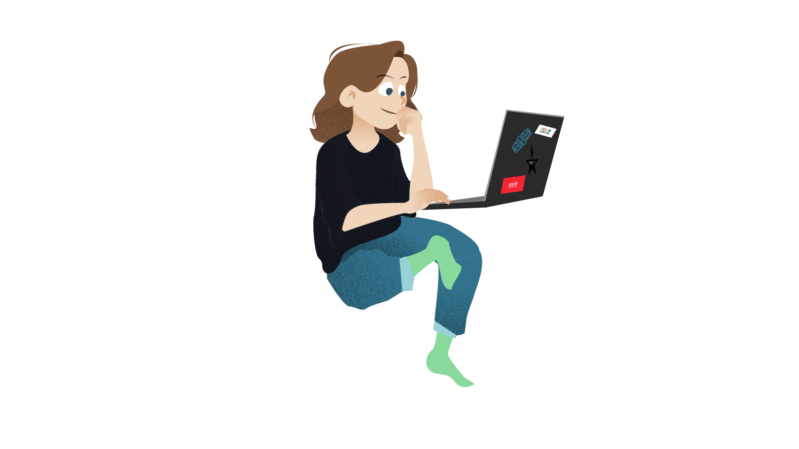

Hola — soy Rivers. Sigue bajando, todo está aquí en esta página.
Disponible para nuevos proyectosDiseño piezas digitales
que se sienten hechas a mano.
Hago
Branding UX/UI · Figma Motion Graphics HTML & CSSAsí ha sido mi camino.
La versión corta: más de 4 años en el mundo del diseño, entre el freelance y la agencia.

Soy Paula Rio — para el mundo del diseño, Rivers. Diseñadora digital en Accenture, con un recorrido freelance en motion graphics antes de eso. Branding, UX/UI, código y vídeo: la suite Adobe entera es mi caja de herramientas.
Seis cosas que puedes esperar de mí.
Pasa el cursor por cada tarjeta para darle la vuelta — o tócala en el móvil.
Vengo de los game jams
para saber más48 horas, un tema sorpresa y cero margen para dudar. Ahí aprendí a decidir rápido, prototipar sin miedo y sacar algo bonito bajo presión.
La ilustración es mi terreno propio
para saber másMás allá de las interfaces, dibujar es donde encuentro mi voz visual — y esa mirada se cuela en todo lo demás que diseño.
Hago las cosas bien, y a tiempo
para saber másEn plazo, siempre, sin recortar esquinas en silencio. La calidad no es negociable.
Hago las cosas fáciles para todos
para saber másComunicación clara, archivos simples, sin jerga que necesite un glosario. La complejidad es el enemigo.
Voy con todo en tipografía
para saber másPuede hacer o deshacer un diseño — trato las decisiones tipográficas con la seriedad que merecen.
Soy curiosa, siempre aprendiendo
para saber másSobre todo donde la creatividad se cruza con herramientas nuevas — ahí vive el trabajo más interesante.